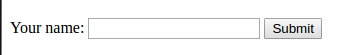
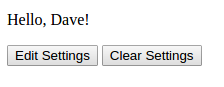
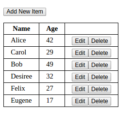
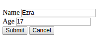

This week you will use localStorage. You have a choice: use localStorage for a simple setting or two entered by the user, or use it to store a local database for an app like the Object List and Rest Data API apps from earlier assignments.
Create a Web page with two divs, one of which will be shown at a time. Call the first "hello-page" and the second "form-page".
The Hello page should have some text like "Hello, ", and a span where the user's name will be inserted. It should also have two buttons, one for editing the settings, and one for removing them.
The Form page will have a form for entering "settings". For this exercise, the only setting can be the user's name. The form might look like this:

In your JavaScript, try to read the settings as localStorage[ "LSS_Settings" ]. If you get a string, use JSON.parse() to convert it into an object, say settings. If that object has a non-empty name property, show the Hello page and fill in the user's name. The screen might look like this:

If the settings value you read is undefined, or has no name property, then show the Form page. When the user submits the form, update the settings.name property and use JSON.stringify() to make settings into a string and set localStorage[ "LSS_Settings" ] to that string to save it. Then show the Hello page.
As mentioned, the Hello page should have buttons for editing and removing the settings.
Create a Web app like the one for the Object List assignment with a table for the items and a form for creating and editing them. The only difference is that instead of just keeping the database in an array in your app's memory, you will also use localStorage to store the data, reading from it at start-up and saving to it whenever data changes.
The table might look like this:

Your form might look something like this:

Use Canvas to submit the URL to your Web page.